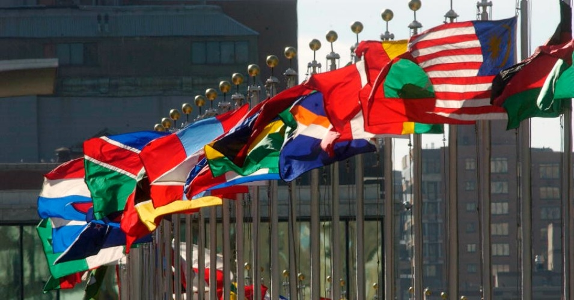

Zastave sveta i njihovi simboli
Državne zastave su ogledalo identiteta jedne nacije. One stvaraju u čoveku osećaj pripadnosti, ujedinjuju ljude istog naroda gde god da se nalaze u svetu. Svaka zemlja ima simbol koji predstavlja njenu istoriju, tradiciju, uverenja i vrednosti. No, da li znamo šta tačno predstavljaju ovi amblemi i boje na zastavama?

Upravo kombinovanjem boja, amblema i grbova na svojim zastavama narodi od pamtiveka stvaraju sliku koja ih predstavlja u svetu. Tako je i danas kada svaka nacija ima jedinstvenu zastavu koju karakterišu međunarodno priznate i objedinjujuće boje koje predstavljaju karakter te zemlje.
Značenje boja i grbova na zastavama
Zastave se koriste za prenošenje informacija. One zapravo šalju poruku o identitetu, emocijama i namerama jednog naroda kroz istoriju. Tako da njihovu simboliku treba potražiti pre svega u bojama koje su na njoj, odnosno u kombinacijama boja. Crvena će označavati opasnost, izdržljivost, hrabrost, revoluciju, krvoproliće, snagu. Bela boja je simbol mira, čistoće i nevinosti. Plava je označitelj slobode, istine i odanosti, pravde i upornosti. Narandžasta označava hrabrost, ali i žrtvu, dok je žuta oprez, bogatstvo i pravda. Zelena boja je simbol sigurnosti, nade, omladine, plodosti i poljoprivrede. Crna simbolizuje smrt, ali i odlučnost, kao i trijumf nad neprijateljima.
Izrada zastava svih vrsta zahteva kvalitetan odabir boja, načina štampe, ali i dobro poznavanje simbola i amblema, pogotovo kada je reč o nacionalnim zastavama. Boje najbolje oslikavaju karakter određenog naroda. Ne slučajno, zastave slovenskih zemalja predstavljaju kombinaciju crvene, plave i bele boje. One su simbol revolucije, slobode i mira. Iste boje nalaze se i na francuskoj zastavi. Crvena, bela i crna dominiraju na zastavama arapskih naroda. Crvena, žuta i zelena simbolično predstavljaju afričke države.
Dok boje predstavljaju nacionalnost, amblemi se koriste kao sredstvo identifikacije. Mnogi narodi i danas na zastavama koriste grbove kojim su se služili njihovi preci u davnim bitkama. Na taj način se na državnoj zastavi učitavaju osnovne vrednosti nacije.Svaka nacionalna zastava ima svoje jedinstveno značenje i posebnu istoriju.